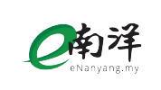
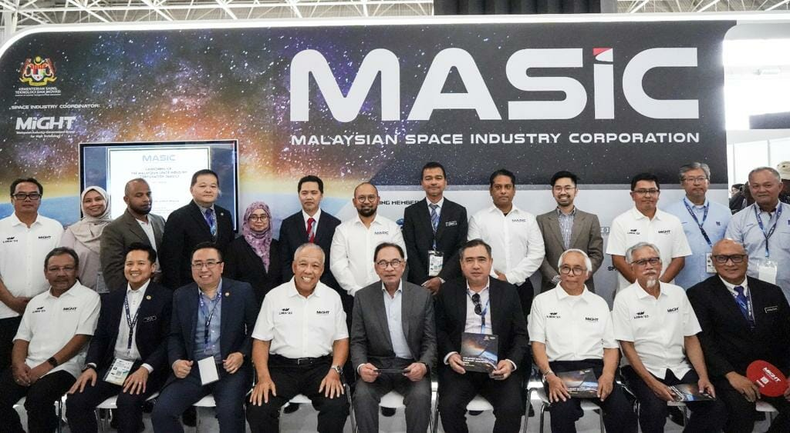
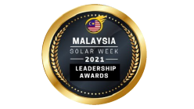
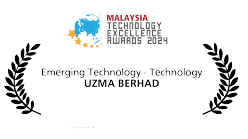

FEATURED ON



About Us

Geospatial AI Sdn Bhd, founded in 2021, is a geospatial analytics company.
A wholly owned subsidiary of Uzma Berhad.Our expertise lies in utilizing satellite imagery and cutting-edge technology to provide actionable insights and information about various aspects of Earth, from urban planning to environmental monitoring
Our VISION
To become top 3 geospatial analytics companies in Southeast Asia, providing near real-time insights for any surface on Earth by 2030.

Our MISSION
- Empower decision-makers and industries with accurate and actionable insights through cutting-edge geospatial analytics.
- Contributing to Environmental, Social and Governance (ESG) goals for sustainable development and informed choices.



Awards & Recognitions
MTEA - Emerging Technology Award 2024
UZMASAT-1 Programme: Revolutionizing Geospatial Intelligence with High Temporal and High-Spectral Resolution Satellite Imagery for Sustainable ESG Applications
The Solar Week Malaysia 2023 : Technology & Innovation Excellence Award
In category of "Smart Technology Innovation of The Year 2023" - Advanced Ground Movement Risk Assessment in Solar Farm Environments Using Satellite-Based InSAR Techhnology
The Solar Week Malaysia 2021 : Technology & Innovation Excellence Award
In category of "Smart Technology Innovation of The Year 2023" - Satellite-Driven Flood Risk Assessment and Geohazard Identification for Solar Farm
We have received awards since embarking on satellite technology development.



